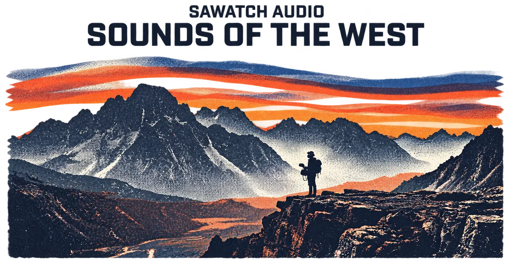
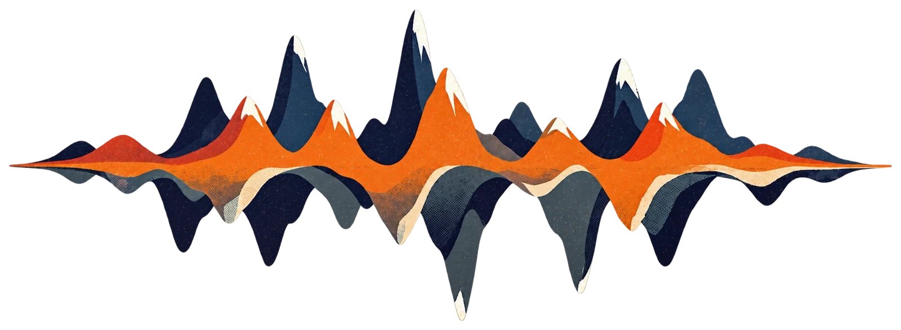
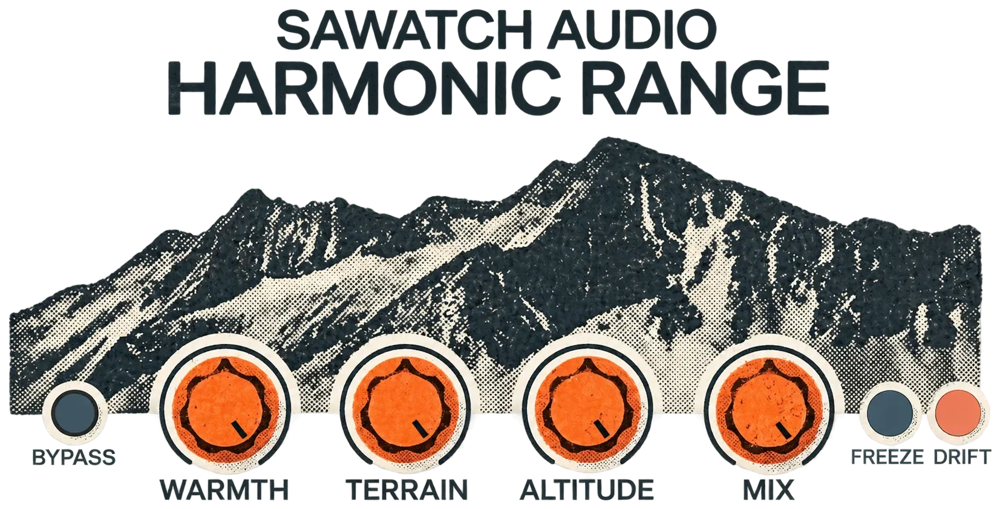
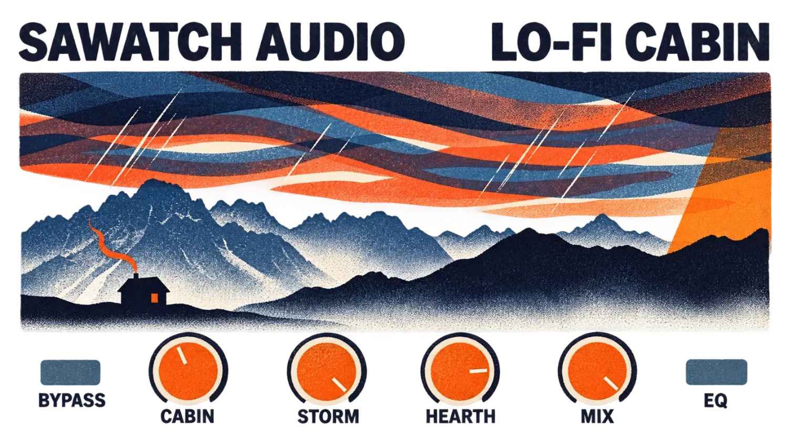

Philosophy
Sawatch Audio makes tools for players who want their gear to carry a sense of place. The warmth of a room. The distance of a ridgeline. The wear of years outdoors. No presets pretending to be a mood. Just controls that respond the way the outdoors do.

Sound
Every Sawatch tool trades a wall of presets for a small number of controls built to be pushed hard and lived with.
Gear

Tube warmth, granular texture, and a dense ambient wash, built for the space between an overdrive and a big reverb pedal. VST3 · AU · Standalone.
Early-bird price for the first 10 customers, then $49. One time, yours to keep.
Listen
"Peak Light" · recorded through Harmonic Range

A warm, intimate tape and small-room sound for a close-miked voice and a live guitar. One Cabin fader, Storm for tape space, Hearth for tape age, and a footswitch of reversed swells. VST3 · AU · Standalone.
Six days free, no key needed. One time, yours to keep.